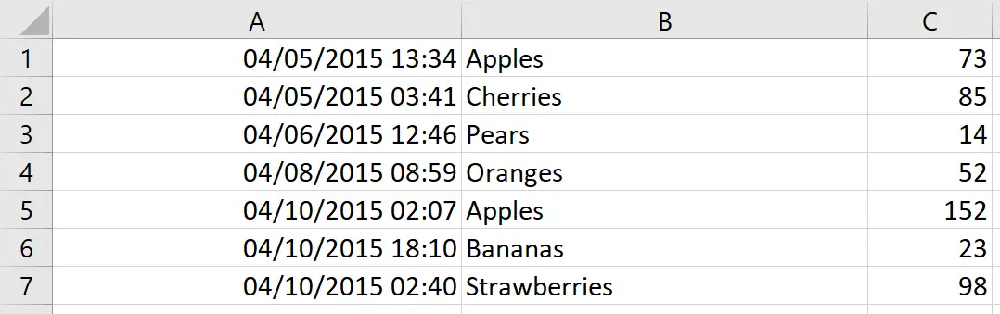
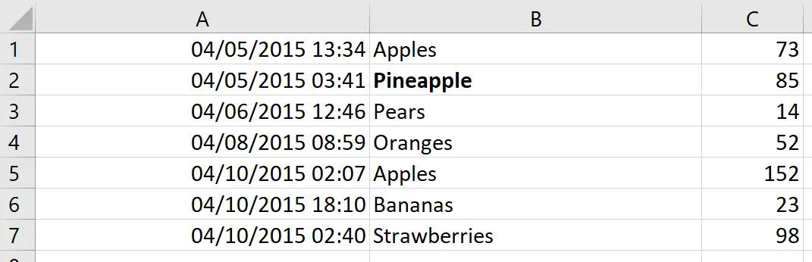
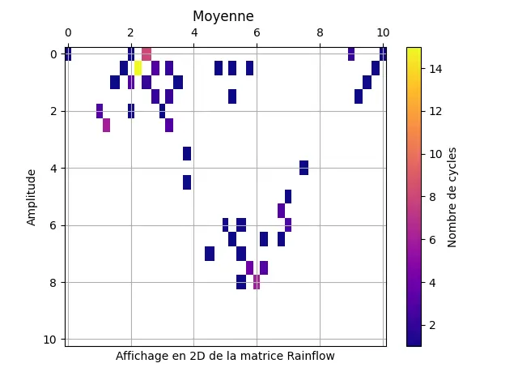
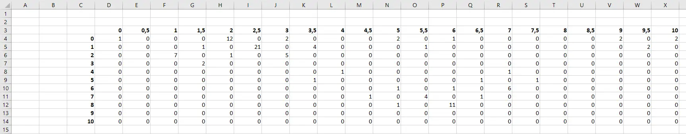
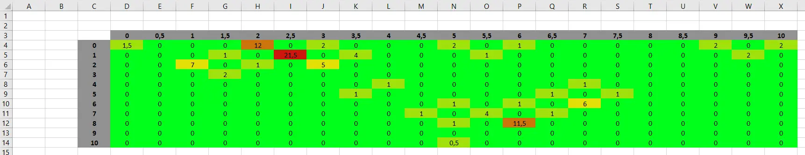

Automatisation d'Excel avec Python
- MON
- 2023-2024
- temps 1
- Excel
- Python
- Openpyxl
- Nicolas Ouzoulias
Mon second MON pour m'améliorer à l'utilisation de Python pour la gestion de tableaux Excel.
Sommaire
I. Introduction
II. Présentation de openpyxl
III. Mise en pratique
IV. Conclusion
I. Introduction
Lors de ce deuxième MON de l'année j'ai suivi le chapitre 13 du livre Automate the boring stuff with Python pour travailler sur les documents Excel depuis Python grâce à la bibliothèque openpyxl.
Ce dernier est disponible ici.
J'ai voulu suivre cette formation car lors de mon stage 2A j'ai principalement travaillé sur un code Python pour étudier des cycles de pression dans des canalisations. Ces dernières étaient initialement stockées dans un tableau Excel, j'ai donc dû utiliser quelques fois la bibliothèque openpyxl mais uniquement quelques lignes, je n'ai pas eu le temps de rentrer en détail et de vraiment comprendre le fonctionnement et les bonnes habitudes à avoir pour optimiser son utilisation.
II. Présentation de openpyxl
La bibliothèque python openpyxl est utilisée pour la lecture et la modification des tableaux Excel, cette dernière facilite l'utilisation et donc l'automatisation de nombreuses tâches
Initialisation et lecture des données
openpyxl n'est initialement pas dans Python il faut donc commencer par l'installer.
pip install openpyxlUne fois installée et opérationnelle il faut écrire sur quel document Excel nous souhaitons travailler. Pour cela on utilise openpyxl.load_workbook() si le document existe déjà ou openpyxl.Workbook() pour en créer un.
Pour travailler sur un document il faut comprendre comment Python visualise ce dernier. Les deux métohdes précédentes créent une donnée de type worbook, mais ce n'est pas celle-ci qui nous intéresse, elle sert uniquement à dire à Python où regarder et quel document lire/modifier.
Un workbook est tout d'abord divisé en plusieurs sheets (feuilles). Et chaque sheet est divisé en de multiples cells (cellules).
Une cellule est caractérisée par :
- une valeur : value (texte, date, nombre,...)
- une ligne : row (1,2,3,...)
- une colonne : column (A,B,C,...)
- des coordonnées : [column+row] (A7,B12,...)
Tout comme pour le document, il faut indiquer à Python quelle feuille sélectionner. Un exemple de début de code sur openpyxl va avoir cette forme :
import openpyxl
table = openpyxl.load_workbook('mon_excel.xlsx')
feuille1 = classeur.active()
feuille2 = table['Sheet2']Ici nous avons deux manières différentes de sélectionner une feuille dans le tableau.
.active()pour celle qui s'ouvre par défautnom_document['nom_sheet']pour en sélectionner une précisément.
Cependant la deuxième méthode nécessite de connaître le nom des différentes feuilles et donc d'avoir le document sous les yeux ce qui est contraignant pour une optimisation. Pour contrer cela on peut utiliser nom_document.sheetnames qui renvoie une liste avec le nom de chaque feuille de nom_document.
Une fois bien initialisé nous pouvons enfin lire des cellules. Pour cela il faut utiliser .value.
cell1 = feuille1['A7']
cell2 = feuille1.cell(row=7, column=1)
valeur1 = cell1.value
valeur2 = cell2.valueLes 2 façons précédentes permettent de lire et de stocker les valeurs d'une cellule. Ici on a évidemment valeur1 = valeur2.
NB : Contrairement à de nombreuses données comme les listes, les array et les boucles for, les coordonnées d'une feuille commencent par 1 et non 0.
La seconde méthode est plus facile à utiliser avec des boucles car elle utilise uniquement des nombres et non des lettres, même si le problème est évitable grâce à get_column_letter() et column_index_from_string().
Écriture et modification de données
Maintenant que nous savons comment lire efficacement un tableau Excel nous allons chercher à le modifier depuis Python.
La modification de la valeur d'une cellule se fait très facilement à l'aide une nouvelle fois de .value.
Pour l'exemple nous avons initialement ce tableau :

Nous pouvons donc en utilisant la méthode précédent modifier une cellule en particulier comme par exemple la B2 et ainsi avoir :

Cependant notre valeur est désormais écrite en gras, comment cela se fait-il ?
En effet en plus de simplement modifier la valeur nous pouvons modifier le style. Le code utilisé pour passer d'un tableau à l'autre a ici été :
import openpyxl
from openpyxl.styles import Font
wb = openpyxl.load_workbook('test1.xlsx')
sheet = wb.active
c1 = sheet.cell(row=2, column=2)
c1.value = "Pineapple"
c1.font = Font(bold=True)
wb.save('test1.xlsx')L'importation de la classe Font issue de la bibliothèque openpyxl.styles permet de modifier le style de la police d'écriture. Le code modifie donc initialement la valeur de la cellule c1 grâce à la ligne c1.value = "Pineapple" avant de la mettre en gras avec c1.font = Font(bold=True).
La dernière ligne du code quant à elle permet de sauvegarder les modifications.
Attention cependant au nom de fichier utilisé pour la sauvegarde, ici le nouveau document va prendre la place de l'ancien ! Il est donc recommandé d'utiliser un nouveau nom pour ne pas écraser les données et revenir en arrière en cas de problème.
De nombreux paramètres sont modifiables grâce à openpyxl.styles comme la police, l'alignement, les couleurs,... Il est également possible de fusionner des cellules et modifier leurs tailles.
L'utilisation de Python pour automatiser les tableaux Excel peut être extrêmement utile mais il ne faut pas oublier que de nombreuses formules Excel existent déjà et rien ne sert d'écrire une fonction Python qui peut se faire directement depuis Excel. Par exemple si nous possédons une colonne de nombres et que nous souhaitons sommer ces derniers, il est plus rapide d'écrire une cellule avec cellule_somme.value = '=SUM(A1:A12)' que d'écrire :
somme = 0
for i in range(1,12) :
cell = sheet.cell(row=i, column=1)
somme+=cell.value
cellule_somme.value = sommeIII. Mise en pratique
Afin d'utiliser les différentes méthodes vues précédemment je vais reprendre le code sur lequel je travaillais lors de mon stage et pour lequel j'ai à peine utilisé openpyxl.
Mon code sert à étudier des relevés de pression dans des canalisations, les données initiales que j'avais étaient donc un tableau Excel avec une colonne de dates et une autre de pressions.
Après avoir importé les données dans Python et après de nombreux calculs j'obtenais un tableau correspondant à une matrice que j'affichais grâce à la bibliothèque matplotlib.pyplot.

Le tableau derrière cette matrice est rangé sous forme d'array dans mon code mais il peut être utile de l'avoir en Excel pour visualiser et le manipuler plus facilement pour les clients.
Cliquez pour afficher la fonction de création du tableau Excel
Cliquez pour afficher la fonction de création du tableau Excel
def convert_excel (matrice, chemin_fichier) :
""" Permet d'enregistrer une matrice dans un tableau Excel.
Paramètre
---------
matrice : np.array
Matrice Rainflow avec en première colonne
et en première ligne les échelles.
Return
------
None
"""
# Créer un nouveau classeur Excel :
classeur = openpyxl.Workbook()
feuille = classeur.active
# Parcourir la matrice et insérer les valeurs dans les cellules :
for i, ligne in enumerate(matrice):
for j, valeur in enumerate(ligne):
if i > 0 or j > 0 :
cellule = feuille.cell(row=i+3, column=j+3)
cellule.value = valeur
if i == 0 or j == 0 :
cellule.font = Font(bold=True)
classeur.save(chemin_fichier)On obtient alors le tableau Excel suivant :

Afin de le rendre plus visuel nous allons recréer une mise en page conditionnelle afin de recréer la matrice colorée obtenue sur Python.
Cliquez pour afficher la fonction de création du tableau Excel avec la mise en page conditionnelle
Cliquez pour afficher la fonction de création du tableau Excel avec la mise en page conditionnelle
def convert_excel (matrice,chemin_fichier) :
""" Permet d'enregistrer une matrice dans un tableau Excel.
Paramètre
---------
matrice : np.array
Matrice Rainflow 'Amplitude-Moyenne' avec en première colonne
et en première ligne les échelles.
Return
------
None
"""
# Créer un nouveau classeur Excel :
classeur = openpyxl.Workbook()
feuille = classeur.active
liste_nbr_cycles = []
# Parcourir la matrice et insérer les valeurs dans les cellules :
for i, ligne in enumerate(matrice):
for j, valeur in enumerate(ligne):
if i > 0 or j > 0 :
cellule = feuille.cell(row=i+3, column=j+3)
cellule.value = valeur
liste_nbr_cycles.append(valeur)
if i == 0 or j == 0 :
cellule.font = Font(bold=True)
if valeur == 0 :
cellule.value = 0
max_nbr_cycles = max(liste_nbr_cycles)
for i, ligne in enumerate(matrice):
for j, valeur in enumerate(ligne):
if i > 0 or j > 0 :
cellule = feuille.cell(row=i+3, column=j+3)
cellule.alignment = Alignment(horizontal = "center", vertical = "center")
if valeur >= 0.9*max_nbr_cycles :
cellule.fill=PatternFill("solid", start_color="CC160C")
elif valeur<0.9*max_nbr_cycles and valeur>=0.5*max_nbr_cycles :
cellule.fill=PatternFill("solid", start_color="CC730C")
elif valeur<0.5*max_nbr_cycles and valeur>=0.2*max_nbr_cycles :
cellule.fill=PatternFill("solid", start_color="E3DF07")
elif valeur<0.2*max_nbr_cycles and valeur>0 :
cellule.fill=PatternFill("solid", start_color="A1E00D")
else :
cellule.fill=PatternFill("solid", start_color="00FF1B")
if i == 0 or j == 0 :
cellule.fill=PatternFill("solid", start_color="919191")
classeur.save(chemin_fichier) 
IV. Conclusion
A travers ce MON j'ai pu mieux comprendre la bibliothèque openpyxl de Python et ainsi être plus apte à utilier facilement ce langage pour automatiser les tableaux Excel qui sont extrêmement présents dans le monde professionel.
J'en ai profité pour améliorer le code de mon précédent stage et plonger plus en détail dans l'affichage des résultats.
Sources
- OpenPyxl - a Python library to read/write Excel 2010 xLsx/xlsm files — OpenPyXl 3.1.2 documentation. https://openpyxl.readthedocs.io/en/stable/
- Automate the boring stuff with Python. https://automatetheboringstuff.com/2e/chapter13/